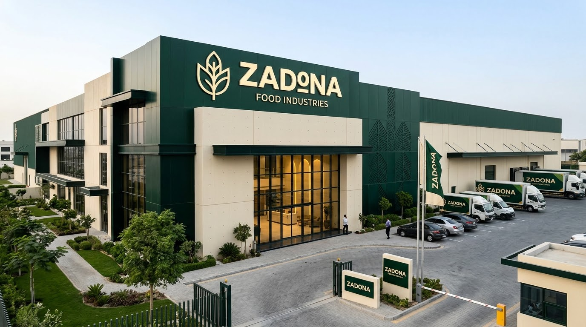

SOURCEنختار
نختار
من البداية.
كل نتيجة جيدة تبدأ بمصدر جيد. لذلك نضع الاختيار قبل كل شيء.
من صالات الإنتاج الفائقة التعقيم إلى أسطول النقل المبرّد؛ زادونا تؤسس جيلاً جديداً من المنتجات الغذائية المدعمة بالبروتين بأعلى درجات الانضباط.


فحص مخبري دوري لكل تشغيلة لضمان نقاء البروتين وثبات الطعم.
ZADONA / FOOD INDUSTRIES
نطوّر منتجات غذائية تجمع بين جودة المكونات، دقة التصنيع، وهوية واضحة تترك أثرًا من أول تجربة.
01 / THE IDEA
الغذاء بالنسبة لنا ليس مجرد منتج. إنه تجربة تبدأ قبل أن يصل إلى يدك.
مكونات مختارة. صناعة دقيقة. وهوية تعرف ماذا تريد أن تقول.
02 / THE STANDARD
من المصدر إلى المنتج.
نظام واضح يحافظ على الجودة في كل مرحلة.
كل نتيجة جيدة تبدأ بمصدر جيد. لذلك نضع الاختيار قبل كل شيء.
نحوّل المواد الخام إلى تجربة ثابتة، واضحة، ويمكن الوثوق بها.
لا نتعامل مع المنتج كنهاية؛ بل كنقطة بداية لفكرة جديدة.
اختيار مدروس للمكونات الطبيعية مع تدقيق متواصل للمصدر والثبات والنقاء.
كل مرحلة تخضع لمعيار إنتاجي صارم ومراقب من بداية التحضير وحتى التعبئة.
تصميم مينيمل ومعلومات غذائية شفافة تجعل خيارك صحياً وسهلاً من النظرة الأولى.
رحلة تطوير الهوية والمنتج الأول.
لماذا نهتم بكل مرحلة قبل وصول المنتج؟
أفكار جديدة وتجارب غذائية قادمة.